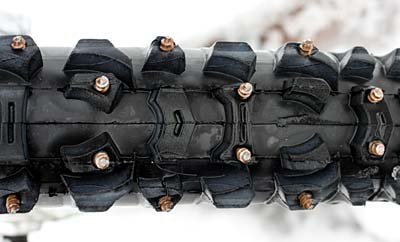
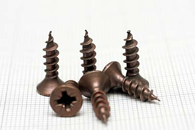
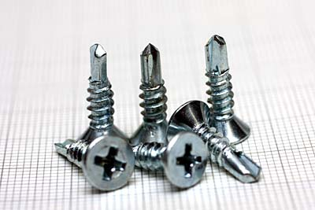
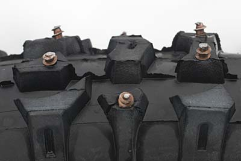

Foto & progetti
MTB GOMME CHIODATE
Come realizzare una coppia di gomme da ghiaccio. "Fai da te" di R.Chirio

Gennaio 2009
Cosa servono delle gomme chiodate (copertoni da ghiaccio) per una bicicletta da MTB?
A molti puristi la cosa non interessa, ma chi vuole divertirsi sulla MTB anche in inverno, due gomme con i chiodi, estendono la possibilità di divertimento.
Le gomme le ho realizzate alcuni anni fa, poi sono finite in cantina, in quanto negli ultimi anni la neve e il ghiaccio scarseggiavano, sicuramente questo inverno, vista la molta neve e le basse temperature, anche in pianura, sono ritornate di moda!
Andando su un lago ghiacciato, o anche solo su neve gelata e compatta, è incredibile, la tenuta, la trazione e la possibilità di fare pieghe in curva che offrono queste gomme preparate con i chiodi.
Per non cadere, è necessario avere anche delle scarpe con chiodi, altrimenti la prima volta che si mette giù il piede, si parte....
materiale:
● 2 gomme 26" con grossi tasselli distanti tra loro. Misura 2.10" o 2.20" (Vanno bene anche dei copertoni economici)
● 2 gomme 26" da strada, anche lisce. Misura 1.80"
● 4-500 parker per legno da 4x15 oppure, meglio le autoforanti da 4x16.
realizzazione
La realizzazione della gomma chiodata con viti Parker non comporta grandi difficoltà, è comunque necessario prestare attenzione alle varie operazioni di foratura copertone ed avvitatura delle viti.
In pratica 100 viti per copertone, sono poche e non assicurano un buon grip, specialmente sul laterale. Consiglio di stare sulle 200 viti per copertone, in quanto un numero maggiore, darebbe sicuramente un ottimo grip ma c'è un notevole peso e anche l'attrito sulla strada è importante.
- Le viti Parker andranno avvitate dalla parte interna del copertone, è un lungo lavoro quindi è necessario procurarsi un buon avvitatore elettrico. Per avere il riferimento di dove infilare le viti è necessario forare da fuori, con punta da 2mm ogni tassello dove si vuole inserire il chiodo (vite). La foratura deve essere eseguita dall'esterno verso l'interno rispettando la centratura del tassello e il suo angolo di apertura. Questa operazione deve essere fatta bene, con precisione, ovviamente con il copertone non montato sul cerchio....


Viti 4x15 legno
- Queste viti sono di ottimo acciaio, molto duro. Sono però troppo appuntite e pericolose, una volta avvitate è bene dare una molata alla punta per non farsi male.
Viti 4x16 autoforanti
- Ottimo acciaio, molto duro, la punta è dura e tiene bene, queste viti, possono ritenersi una soluzione migliore delle precedenti, non sono così appuntite da farsi male, non è quindi necessario molare le punte.
- Terminate le operazioni di foratura, possiamo procedere con l'avvitare le circa 200 viti per copertone. Utilizzando un avvitatore in 20 minuti si può preparare una gomma.
- Le viti vanno avvitate dolcemente fino in fondo senza forzare, altrimenti la gomma si crepa facilmente.
- A questo punto possiamo montare il tutto sul cerchio. Bisogna inserire la gomma da strada all'interno del copertone artigliato, ora diventato chiodato. Il copertone da strada serve per tenere in posizione la testa delle viti, altrimenti sotto carico entrerebbero all'interno del copertone distruggendo in breve tempo la camera d'aria.

- Il copertone da strada in genere si riesce a farlo stare all'interno senza togliere il bordino di tenuta, in casi particolari dove la sede del cerchio è particolarmente stretta e necessario tagliare il bordino di tenuta e mantenere solo la parte esterna battistrada.
- Al posto del copertone interno si può montare una protezione in Kevlar o Mylar, per evitare che la testa delle viti vadano a danneggiare la camera d'aria, si è comunque sperimentato che il copertone da strada liscio è la soluzione più robusta che permette di fare molti km senza problemi con le viti, importante il gonfiaggio a 3-4 Atm.
- Terminare il montaggio con gli appositi attrezzi per calzare il copertone. Controllare che tutto calzi bene nella sede del cerchio e che la camera d'aria non venga pizzicata.
{kind=link}
Le gomme della foto sono state chiodate 10 anni fa quindi non ci sono foto che illustrano come avvitare le viti all'interno, ma non è così difficile da immaginare, basta usare un buon avvitatore.
- La gomma va gonfiata a 3-4 ATM in quanto sotto carico si esercita molta spinta sulla testa delle viti, particolarmente quando si viaggia fuori ghiaccio/neve, cioè sulle pietre e asfalto.
- Evitare il più possibile di andare su rocce e sull'asfalto e fare attenzione ad eventuali cadute......i chiodi (viti) lasciano il segno......
- BEST-GRIP Produttore italiano di chiodi in Widia per MTB: http://www.best-grip.com/ita/default.asp
- Interessante questo articolo in inglese, che parla delle gomme chiodate normalmente in produzione e disponibili sul mercato Americano: http://www.peterwhitecycles.com/studdedtires.asp
- Sito Americano dedicato al ICEBIKING: http://www.icebike.org/Equipment/tires.htm
Può essere molto pericoloso andare su specchi d'acqua gelati, verificare che il reale spessore del ghiaccio possa tenere il peso....
Non si risponde per danni a cose e persone e per un uso improprio della realizzazione.
© Roberto Chirio: all rights reserved.